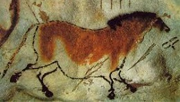
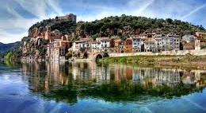
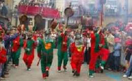

El conjunto de arte rupestre del arco mediterráneo de la península ibérica está formado por 757 yacimientos con pinturas, y fue inscrito en la Lista de Patrimonio Mundial de la UNESCO en 1998. Se trata del conjunto de yacimientos de arte rupestre más grande de Europa. En Cataluña encontramos los abrigos de ermitas de la Sierra de la Pietat (Ulldecona), Roca de los Moros (el Cogul) y la Cueva dels Vilasos o dels Vilars (Os de Balaguer), entre otros.
Los humanos que habitaron las montañas litorales e interiores de Aragón, Cataluña, Valencia, Castilla-La Mancha, Murcia y Andalucía escogieron brigos y cuevas poco profundas para pintar y grabar ímbolos y escenas de su vida cotidiana. Sin embargo, los muros decorados también plantean muchos interrogantes sobre sus creencias, organización y otros aspectos que difícilmente llegaremos a conocer.
Las pinturas del arco mediterráneo se ejecutaron a finales del paleolítico, hasta la edad del bronce o de hierro. Las escenas representadas son las primeras narraciones de la prehistoria europea, expresan ideas que hasta entonces eran inexistentes: el hombre muestra su relación con el entorno,los vínculos con la naturaleza, las creencias y, a su vez, manifiesta su dominio e intervención en el medio donde vive.
Utilizaron diferentes técnicas y colores creando varios estilos que se clasifican en naturalista, esquemático y macroesquemático. Estos dos últimos se impusieron en la fase final y se decantaban por una estilización cada vez más acentuada de las expresiones y por el creciente protagonismo de signos y símbolos . El color más utilizado es el rojo, en todas sus variadas tonalidades.
El arte rupestre del arco mediterráneo. La península ibérica celebra 20 años como Patrimonio Mundial por la UNESCO.
El desarrollo urbanístico de la ciudad, así como la densidad y la calidad de los restos,convierten al conjunto arqueológico en un bien universal e inccomparable.
Tarragona y su entorno conservan vestigios que son testimonios de la huella de Roma en nuestro país. El conjunto incluye diversos monumentos del sigloIII a.C hasta VId.C., que se conservan en muy buen estado. Todos ellos son característicos de un a capital de provincia como lo fue la antugua Tárraco.
Tárraco se fundó como campamento militar romano con la intención de interceptar los ejércitos cartagineses que, desde el sur de la península ibérica, pretendían atravesar los Pirineos y atacar la Península Itálica. El año 217a.C, Gneu Corneli Escipió y su ejército desembarcaron cerca del río Tuclis (Francolí)
junto a un poblado ibéro, y en la parte más alta de la colina se ubicó el campamento. Con el tiempo, Tárraco prosperó como ciudad y también como centro administrativo y político, favorecida tanto por la sitación costera, facilitando el control de las rutasmarítimas, como por su emplazamiento en relación a las vías terrestres hacia el interior peninsular. Se convirtío en colonia romana, al frente de un conventus (demacración judicial) y capital de provincia de la Hispania Citerior o Tarraconense
La importancia urbana de Tárraco favoreció el establecimiento de instalaciones agrícolas y residencciales a su alrededor. Es lo que se conoce como villas.
La villa de los Munts, en el actual término municipal de Altafulla, es una residencia muy lujosa probablemente propiedad de un personaje muy notable y adinerado de Tárraco. Fue construida a principios del siglo Id.C. y parece que no se abandonó hasta los siglos VI-Vii d.C.
Las excabacionesarqueológicas han desvelado diversas estancias que conducen a un gran pasillo porticado que limita una gran área al aire libre, posiblemente ajardinada.
También se ha encontrado abundante material escultórico, ricos pavimentos, pintuiras murales, dos complejos termales, etc.
Lluís Domènech i Montaner
El Palacio de laMúsica Catalana y el Hospital de Santa Creu i de Sant Pau, obras del arquitecto Lluís Domènech i Montaner, son dos edificaciones emblemáticas situadas en la ciudad de Barcelona que se construyeron durante los primeros años del siglo XX.
Lluís Domènech i Montaner, arquitecto imaginativo y pragmático, nació en Barcelona en1984 en una familia acomodada muy cercana al entorno del Renacimiento catalán.
Con una personalidad liberal y erudita, sentía pasión por la arquitectura y colaboró en la difusión del Modernismo desde su cátedra de la Escuela de Arquitectura de Barcelona. También participó de manera activa en movimientos políticos catalanistas y fue elegido diputado de las Cortes españolas en 1901 y 1903.
El racionalismo arquitectónico convive con la imaginación y la riqueza decorativa característica de Modernismo, cargada de un intenso valor alegórico.
Tanto el Palacio de la Músioca Catalana como el Hospital de la Santa Creu i de Sant Pau son edificios de uso público en los cuales se fusionan la tradición y la modernidad. En ellos se evidencia una importante renovación de técnicas tradicionales y la incorporación de soluciones arquitectónicas nuevas.A su valor arquitectónico se suma la belleza y la exuberancia decorativa, convirtiendose en obras de una significación artística e histórica universal
Vall de Boí

La Vall de Boí es un valle pirenaico situado en la comarca de Alta Ribagorza, es un territorio rodeado de altas montañas.
Es una de las zonas más conocidas de Cataluña gracias al patrimonio arquitectónico que concentra.
Destacan 9 iglesias rurales muy bien conservadas que son un testimonio histórico de la época. Fueron declaradas patrimonio mundial en el año 2000.
La construcción de templos, que cumplian una importante función religiosa y moralizante entre los fieles, eran un testimonio de poder y un lugar de refugio para la población del valle.
De esta manera, los altos campanares de torre eran un símbolo religioso, pero también servian para propagar noticias y eran eficientes torres de vigilancia
La Patum de Berga

La PFiesta de la Patum de Berga es una celebración tradicional que se realiza durante las fiestas del Corpus Christi en la localidad barcelonesa de Berga. Ha sido declarada par la Unesco Patrimonio Cultural Inmaterial de la Humanidad el dia 25 de noviembre del año 2005 e inscrita en 2008 en su lista representativa y por ello elegida automaticamente como Tesoro del Patrimonio Cultural Inmaterial de España junto al Ministerio de Elche. Anteriormente, en el año 1983 fue declarada por la Generalidad de Cataluña fiesta tradicional de Interes Nacional.
La Patum fue fundada a finales del siglo XIV como una fiesta de crácter esencialmente popular y se encunetra documentada desde el año 1525. En el año 1939 fue financiada por la Falange Española. La celebración cnsiste en diversas representaciones de figuras míticas y simbólicas, que bailan al ritmo de la música y los tambolres. Los bailes se caracterizan por su solemnidad, así como por la utilización de fuego y artefactos pirotécnicos.
El miércoles anterior al jueves de Corpues, el tabal (progonero de la fiesta) y los gigantes recorren la ciudad anunciando el comienzo de las fiestas. Más tarde comienza el drama, dividido en varios actos, que representan las intensas luchas de los cristianoscontra los moros; al arcángel San Miquel que ayudado po ángeles, lucha contra Lucifer y sus diablos; o las burlas contra el caudillo árqabe Abul-Afer o Bullafer, conquistador de la zona. En cambio, el acto de águila expresa satisfacción de Berga por haber acabado con el dominio feudal y pasar a depender directa y exclusivamente del rey. Las fiestas tienen lugar desde miércoles de Corpus hasta el siguiente domingo. Al día siguiente del propio Corpus se realiza una Patum infantil, en una versión adaptada para niños.
Santa MAría de Poblet
La abadía de Santa Mría de Poblet, fundada en el siglo XII, es uno de los conjuntos monásticos más importantesy de más calidad artística que se consrvan. Está situado en Vimbodí ( Cuenca de Barberá) y fue declarada patrimonio mundial en 1991.
Además de su significación religiosa y artística, el monasterio se convirtió en un lugar muy vinculado a la historia de los condes del Casal de Barcelona y de los Reyes de la Corona de Aragón. Así pues, en la abadía se construyó un recinto fortificado, un palacio y un suntuoso pantón real donde reposan muchos reyes.
El edificio, quizás el ejemplo más importante de arquitectura cisterciense de los siglos XII al XIV de nuestro país, muestra una asociación única de formas y de estilos arquitectónicos de un gran valor artístico, en el cual participaron maestros de obras y artesanos de gran reputación.